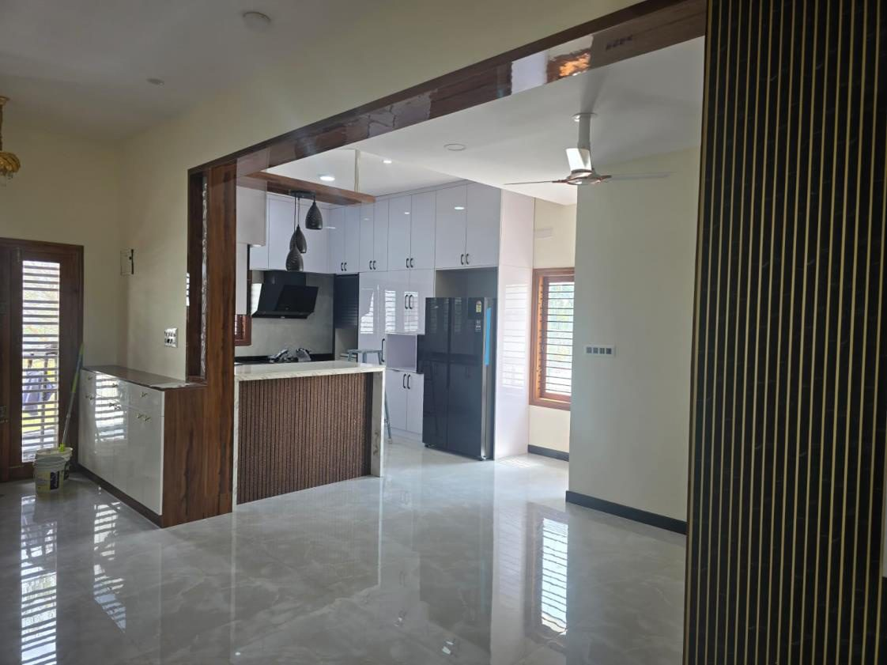

Home / About
About Kutadri Contech
We're a Bengaluru construction firm built on a structural engineer's discipline — planning carefully, building accountably, and handing over exactly what we promised.

Who we are
Kutadri Contech takes on residential, commercial, industrial, institutional and water-infrastructure work across Bengaluru — from a 3,000 sft home to a 2-acre school campus and full water treatment plants.
Because the same team plans, engineers and executes, nothing falls through the gaps between consultants. You get one point of accountability and a build that stays true to the drawings — and to the budget you agreed to. And because we take on only six projects a year, each one gets the engineer's full attention — that's how we hold the best quality in the industry.

Leadership
Kutadri Contech is founded and run by Arun Kumar K V — a postgraduate structural engineer who has spent his career making sure buildings are sound before they're built.
Our promise
Every project is measured against the same commitment — and we keep it documented, not just spoken.
Structural soundness and finish quality checked at every stage, by the people who designed the build — not left to chance on site.
Schedules planned around real site risk, so timelines hold and the building you were shown is the building you receive.
Clear scope, clear costing and documented progress — you always know where the project and the money stand.
Bring us the site and the brief. We'll tell you straight what it takes to build it well.